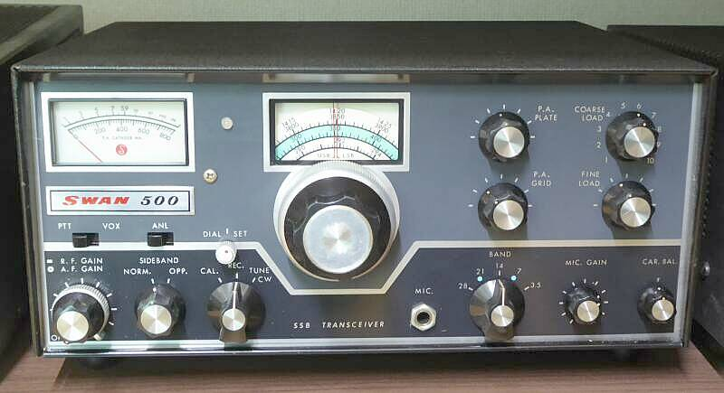
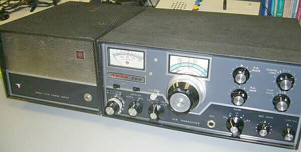
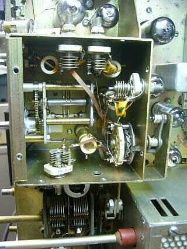
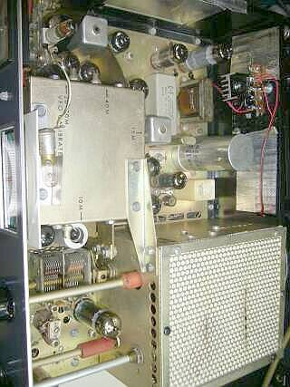
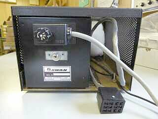
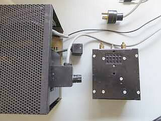
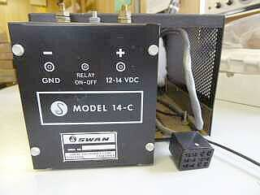
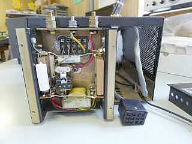

メータとダイヤル表示の間に見えるものは、Ｘ-Ｌｏｃｋ動作表示の２色ＬＥＤ（後付したもの） |
管球式のものには手を出さない・・・と言いながら、それからもう２台目です（意志の弱さ丸出し！）
コスト・パ・フォーマンスの高さで、一世を風靡したSWAN社のトランシーバです
歳のせいでしょうね、私の頭の中にある無線機のイメージは、まさにこのデザインです！
私がＤＸに目覚めた頃、ひょっこりひょうたん島、ドン・ガバチョ役の故藤村有弘氏（ＪＨ１ＢＡＮ）が、その当時このＳＷＡＮ５００を使ってオンエアされていたことを覚えています
半導体化されたATLASの製品を紹介していますが、ＳＷＡＮが時代的（設計的）にはオリジナルです（ＡＴＬＡＳは、ＳＷＡＮの創業者が、後に立ち上げた会社）
１９６０年代中盤の発売で（本機付属の取説回路図には、６７年のスタンプ有り）、ＶＦＯの２ＴＲ（＋接地！ 昔のワーゲンみたい）を除き、全て真空管で構成されています
電源部は、当時の標準的な外付け方式・・・商用電源用Ｍｏｄｅｌ １１７-Ｘ と、ＤＣ電源用Ｍｏｄｅｌ １１７-１４ 、そして商用電源用を組み込んだコンソール
１１７-ＸＣ と、ＤＣ電源用を組み込んだコンソール Ｍｏｄｅｌ １４-Ｘ がありました
特徴は、そのままＳＷＡＮの特徴でもある、５MHｚ台のクリスタル・フィルタ方式のシングルコンバージョン構成
構成としてはシンプルでありますが、非常に高い周波数を自励発振・・・バンドに必要な周波数を一発発振させるVFOに特徴があります
２８MHｚ帯に関しては２３MHｚ前後を一発発振で得るわけですから、機構的にも電気的にも安定を追求しなくてはなりません
国産では、八重洲無線 ＦＬ-５０／ＦＴ-５０シリーズが、この構成を真似たものです
また送受で共通出来るものは全て・・・受信ANTコイルも省略され、送信のπマッチを受信高周波増幅段の入力にそのまま使用してあります
当時の（安価な）トランシーバでは標準的な手法です
ＴＲＩＯ（現ＪＶＣケンウッド）最初のＳＳＢトランシーバ ＴＳ-５００ ですが、やはりこの方法が採用されていました
デメリットは、イメージ混信に弱い（選択度が悪い／単なるＬＰＦです）、高感度を得にくい（昇圧効果が得られない）等があげられますから、省スペース・コスト低減のメリットを取ったと言うことです |

写真は、ＳＷＡＮ５００ 本体と、１１７-ＸＣ コンソール電源 |
 |
VFOの構造
上カバーを外しています
ご覧のように、頑強な構造が採用されています
バンドごとに必要な周波数を得なければなりませんから、VFOボックスの中に、複数のコイル群とバンドSWが存在します
なかなか面白い構造でバンドSWに連動させてあります
減速機構は、バーニア機構を２段使用してあります（ダイヤルも２段構成で、早送りと微調が可能／バンドチェックには、この早送りが便利！）
ダイヤルタッチは、悪くありませんが、周波数の読取精度は数ＫＨｚです（１ＫＨｚ直読とまではいきませんし、バンドによっても異なります）
ＨＥＡＴＨ-ＫＩＴ ＨＷ-１００シリーズと同じくらいかなと思われます |
 |
コンパクトに仕上がっています
受信は、一般的な高１中２のシングルスーパー構成です
ＡＧＣは、オーディオ・ハング型が採用されています
送信は、機種名の由来どおり・・・約５００W入力（公称４８０ＷＰＥＰ）
ファイナルは６ＨＦ５ｘ２ 国産で言えば、ＦＴ-ＤＸ４００（ＵＳ型式：ＦＴ-ＤＸ５６０・・・なんとなくＳＷＡＮ風なネーミング！）、あるいはＴＳ-５１１Ｓとほぼ同等です
小型化のために、ロードＶＣも小容量のモノが採用され、並列固定Ｃを切り替えて必要な容量を得るようになっています
３．５～２１ＭＨｚ帯にて
Ｔｕｎｅで、２００Ｗ強の出力が得られます（プレート電流０．４～０．５Ａ程度）
受信感度は、標準的・・・最終的に ０．５μV S／N１０ｄｂ以上を確保、実際にアンテナをつないで聞いてみて、ＩＣ－７５６ＰＲＯⅢと遜色ありません（聞こえるものは、聞こえます！）
半世紀前の新製品ですから、現役であるためには、ある程度のメンテと今風への取り組みが必要です
詳しくは → こちらで |
ＳＷＡＮ製品としては、ＳＷ１００シリーズ（モノバンド・シリーズ）から始まり、多分ですがＳＷＡＮ７００ＣＸまで、その中でもＳＷＡＮ３５０、ＳＷＡＮ５００Ｃが高名なように思います（製品最後には、オール・ソリッドステート構成の ＳＳシリーズがあったと思いますが、あまり印象に残っていません）
数字は、送信入力パワーと思えば良いのだと思います
５００Ｃは、ここにご紹介の５００の後継機で、送信平衡変調に使用される真空管が ７３６０ → ６JＨ８ に、ファイナル管が ６ＨＦ５ｘ２ → ６ＬＱ６ｘ２ に変更され、キャリア発振が真空管からＴＲに（同時にスタビロ1本を省略）、これでスペースが出来たのでしょう、５００ではシャーシ下に横向きに配置してあるキャリア水晶が、５００Ｃではシャーシ上に配置されています
あと、送信調整時に便利なＲＦ出力表示が追加されています（５００は、ファイナル電流表示のみ） |
| 2014.05 ＪＡ４ＦＵＱ |
 |
１１７-ＸＣ コンソール電源
元々の背面の様子は、左写真の通りです
無線機接続のコネクタは、良く目にする１２Ｐ角型ジョンソン・コネクタです
電源部は、確かにモジュール化してあります
ＡＣコードの接続に、何で１５Ｐもの多極コネクターを使っているのかなと、チラッと思っていました
今回その理由が分かりました！！
|
 |
このようなＤＣ－ＤＣコンバータ・モジュールのオプションがあったのでした
手持ちの取説には、ＤＣ電源装置は記載がありましたが、１１７-ＸＣ ＡＣタイプのコンソール電源に取り付けるＤＣ－ＤＣコンバータ・モジュールというものの紹介は、ありませんでした
調べて分かったことは、電源ベースモデル：１１７Ｘ に、この１４-Ｃ をセットにしたものが、ＤＣ１２Ｖ電源 Ｍｏｄｅｌ １４－１１７ でした
コンソールに、１１７Ｘ を納めたものが、Ｍｏｄｅｌ １１７－ＸＣでした
な～んだ、です！ |
 |
ＡＣ接続用コネクタを抜いて、ＤＣ仕様にセットしたところです
しかし、無線機本体に加え、こんなコンソール電源を積んで走れる車というのは、やはりアメ車でしょうか？
そう言えば、ＳＷＡＮ Ｍｏｄｅｌ ４５だったか、７０年代に、ＨＦ５バンドを手動で切り替える機構を持った、デカイ センター・ローディングの車載アンテナを出していましたね
日本では、７５ｍ→８０ｍに変更した「４５Ｊ」と言う型式で、タマエレクトロニクスが扱っていたような記憶があります |
 |
センターでビス1本止めです
アース端子にしては不自然？と思っていたビスは、実はこのＤＣ－ＤＣの固定用に使うものでした（もちろんアース端子として使用できます）
こうしてみれば、ＦＴ－１０１などコンパクトというかスマートでしたね |
|
| 2017.02 ＪＡ４ＦＵＱ |